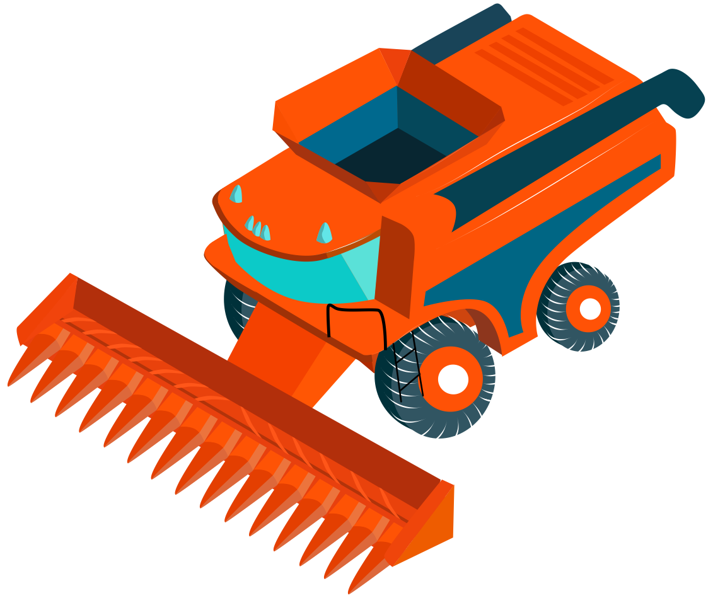

Найвідповідальніший період у технології вирощування зернових культур. Головна вимога — зібрати біологічний урожай за мінімальних втрат і раціональних затрат праці й інших ресурсів, зберігши високі насіннєві, продовольчі та кормові якості зерна. Для виконання цього процесу в сучасному суспільстві застосовують самохідні механізми із спеціалізованими жатками.
Зернова жатка
Механізм для скошування сільськогосподарських культур і транспортування скошеної маси до молотарки комбайна або для укладання скошеної маси у валок. Може бути платформеною або шнековою. Платформена жниварка використовується тільки для скошування культур. Шнекова жниварка може використовуватися, як для прямого комбайнування, так і для роздільного способу прибирання врожаю.
При роздільному способі для скошування культури у валок на жатці задіяні різальний апарат і мотовило, і встановлюється стрічковий транспортер, а при підборі встановлюється підбирач і задіюється шнек. Різальний апарат жатки зрізує стебла за принципом ножиць. Нерухомі пальці виконані з чавуну або сталі, на них встановлені протирізальні пластини. Рухливий ніж складений з трикутних пластинів-сегментів.
Зрізування відбувається за рахунок зворотно-поступальних рухів ножа, при цьому гострі різальні кромки сегментів перерізують стебла. Мотовило підводить стебла зрізуваних рослин до різального апарату й утримує їх під час зрізування. Потім просуває хлібну масу углиб платформи. При прибиранні полеглих хлібів мотовило висувається вперед і опускається нижче, за рахунок цього пружинні пальці мотовила підводять колоси і утримують їх аж до зрізування.

Соняшникова жатка
Пристрій для скошування соняшника методом прямого комбайнування. Рядкова-жатка зкошує соняшник йдучи по рядкам засіву культури. Сучасна жатка для соняшника може бути розміром різальної частини 6, 7 і 9,1 метрів.
